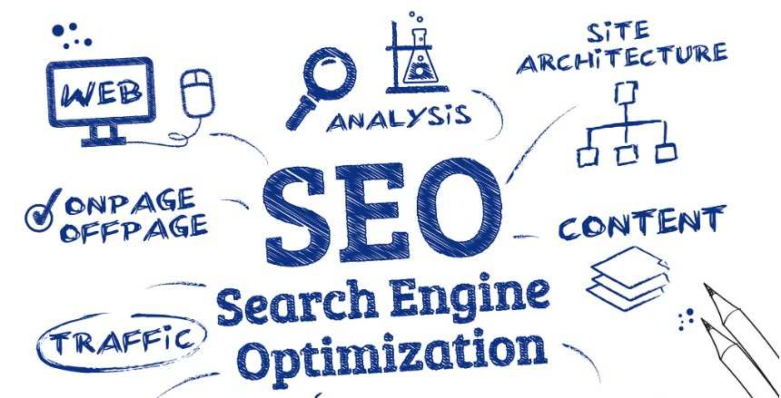
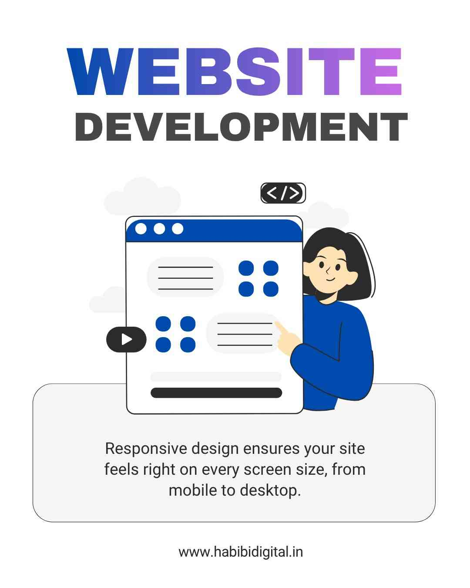
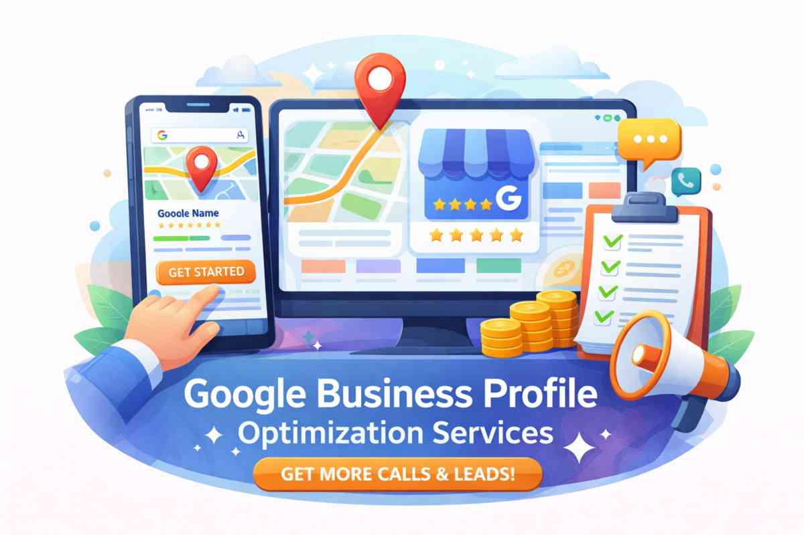

In today’s competitive digital market, businesses that are not visible online are losing customers daily. Learn how SEO, digital marketing and online branding can transform your growth.

Search Engine Optimization (SEO) helps your business appear on Google search results. Without keyword research, on-page optimization, local SEO, and technical improvements, your competitors will dominate rankings.
Proper SEO increases organic traffic, builds trust, and generates consistent long-term leads.
A slow or outdated website reduces conversion rates. Google prioritizes fast, mobile-friendly, secure websites.


Google Business Profile is essential for local SEO. Optimized categories, business description, reviews, and location signals help you rank in Google Maps and local search results.
Businesses with strong reviews and optimized profiles get more calls and walk-ins.
Social media marketing builds brand awareness and authority. Consistent posting, reels marketing, content strategy, and engagement campaigns increase customer trust and improve visibility.
A complete digital marketing system includes:
One of the most searched questions in digital marketing is: “How much does website development cost in India?” The answer depends on business type, features, and development level.
Perfect for small local businesses.
Estimated Cost: ₹8,000 – ₹20,000
Estimated Cost: ₹25,000 – ₹60,000
E-commerce website development cost depends on product quantity, payment gateway integration, shipping system, and custom features.
Estimated Cost: ₹35,000 – ₹1,50,000+
Every local business wants consistent leads. With the right digital marketing strategy, generating 50+ quality leads per month is possible.
Optimize your website with location-based keywords, improve Google Business Profile, and build local citations to rank higher on Google search and Maps.
Paid ads help generate instant inquiries. Target high-intent keywords like “near me” searches.
Add clear call-to-action buttons, WhatsApp chat, and lead capture forms to increase conversions.
Use Facebook & Instagram ads to retarget visitors and convert them into paying customers.
A static website shows fixed content and is ideal for small businesses, while a dynamic website allows content updates, user interaction, databases, and advanced features like login systems and dashboards.
Website speed directly affects user experience and Google rankings. Faster websites reduce bounce rate, improve engagement, and increase conversion rates.
Core Web Vitals measure loading speed, interactivity, and visual stability. Google uses these metrics as ranking factors to determine website quality.
Content marketing builds authority, improves SEO rankings, attracts organic traffic, and converts visitors into leads through blogs, guides, and educational content.
Conversion Rate Optimization (CRO) focuses on improving website elements like call-to-action buttons, landing pages, and forms to increase the percentage of visitors who become customers.
Yes. A website builds credibility, gives full control over branding, improves SEO visibility, and converts traffic better than social platforms alone.
Habibi Digital Solution helps local businesses increase visibility, generate quality leads and dominate their market with strategic digital marketing.
Get Free Consultation